Featured in the LA Times, Wired, Atlantic Cities, Huffington Post, Gizmodo, Thrasher Skateboard Mag, to name a few.
Exhibited work in LA, SF, London, Rotterdam, Tokyo, & Istanbul.
Consulted for groups such as World Bank and Dexina Consultants (DE).
Collaborated & worked with MIT, Sante Fe Institute, 47Nord, UCLA, CIRS (UBC) and a number of others.
Why am I here?
2 major interests...
How can we use maps to ask questions, communicate science, and reimagine the world we live in?
How can we use data as materials for making maps and technology as a tool to develop new ways of interacting with and understanding space?
Mapping to pose questions and stimulate discussion.
“A map does not just chart, it unlocks and formulates meaning; it forms bridges between here and there, between disparate ideas that we did not know were previously connected.”
― Reif Larsen, The Selected Works of T.S. Spivet
My interpretation:
As a mapmaker, one of our many roles is to make our observations tangible .
The Big Atlas of LA Pools
How many pools are in LA?
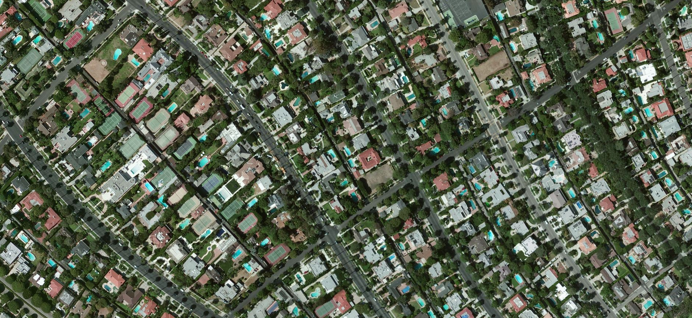
Just two guys.
17gb of imagery
Turns out we know nothing about computer vision
Outsource our problems
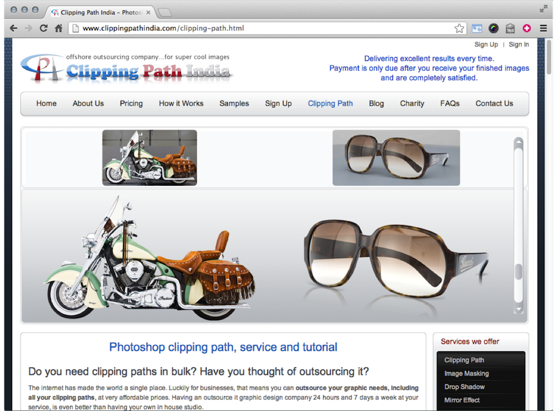
Outsource our problems
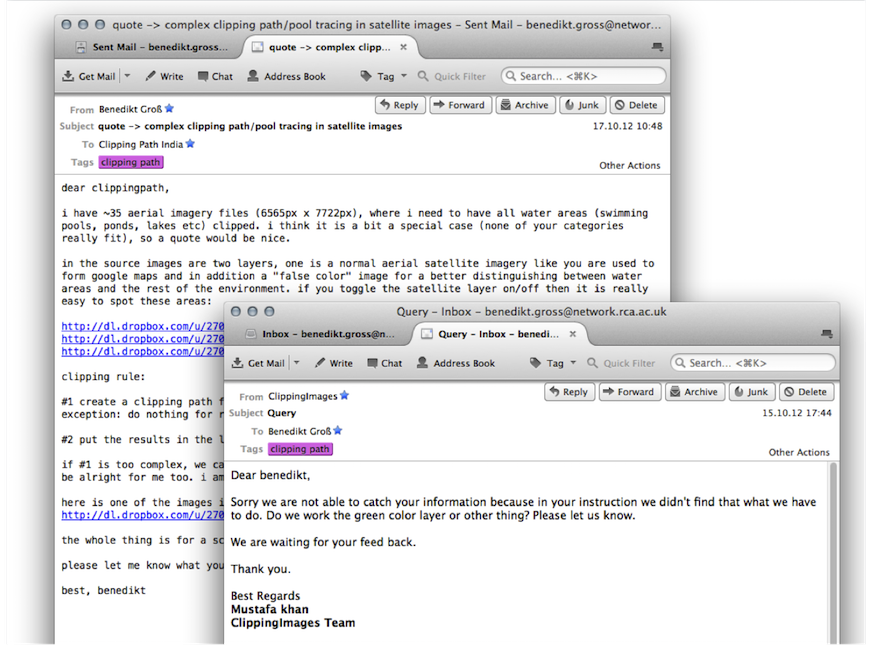
Scary amount of labor
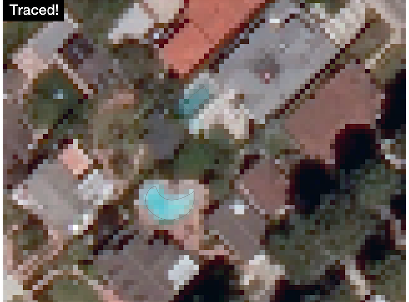
43,123 hand-drawn features
Not just a fun data viz project anymore - how do we comment on these crazy processes?
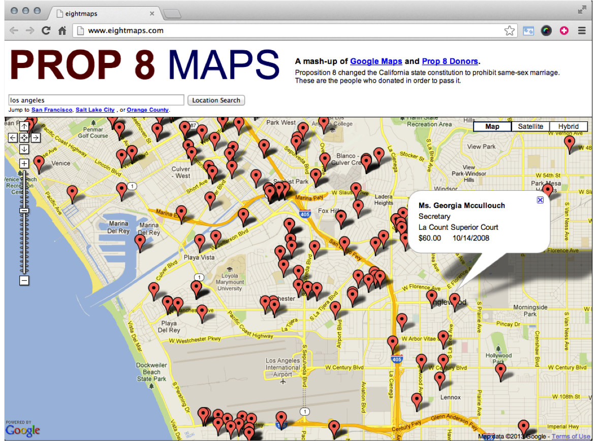
All contained in...
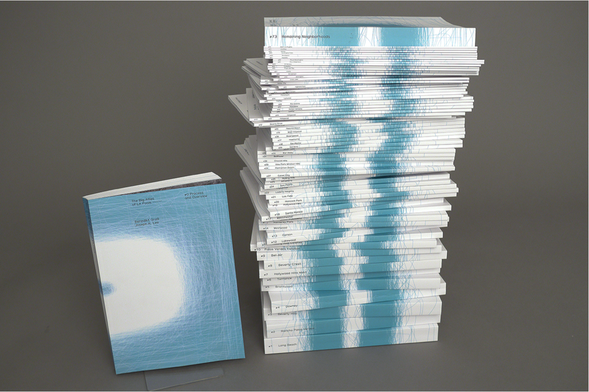
With some posters like this...
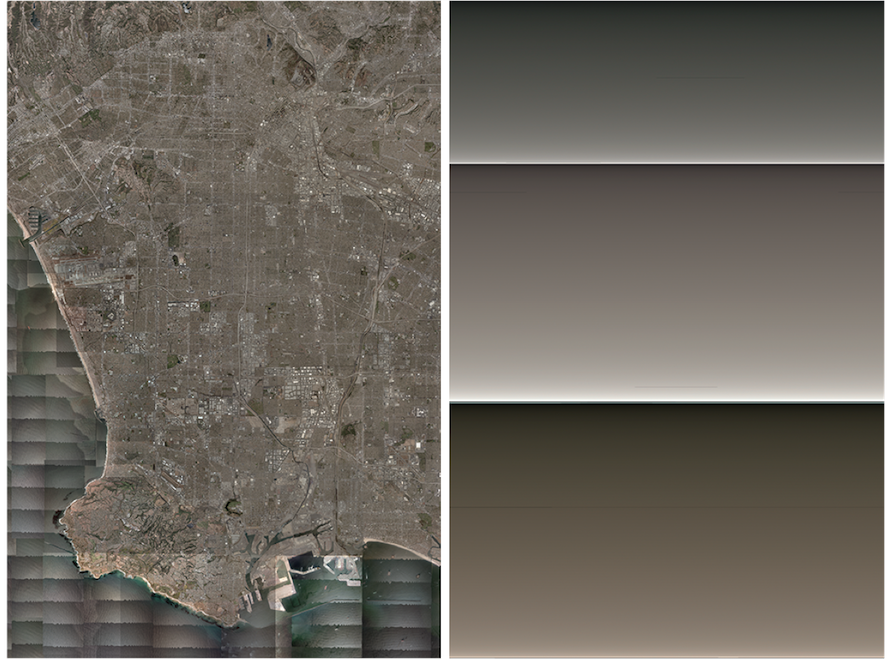
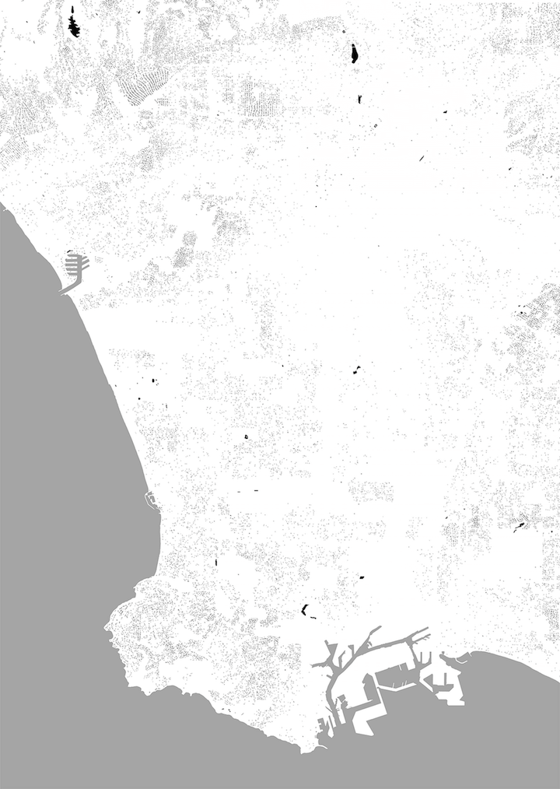
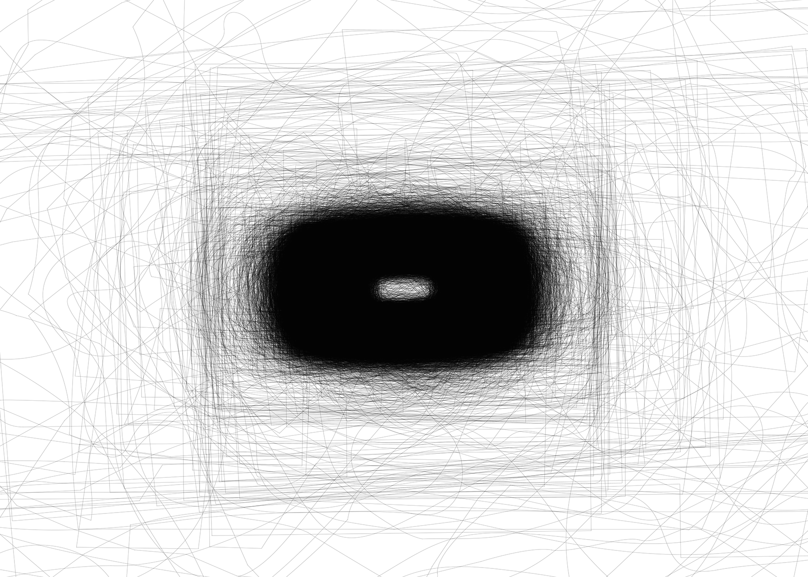
What additional technologies let us look into your life ?
The LA Swimmer: 43,123 pools I have never visited and never will
"Pool by pool they form a river through LA"
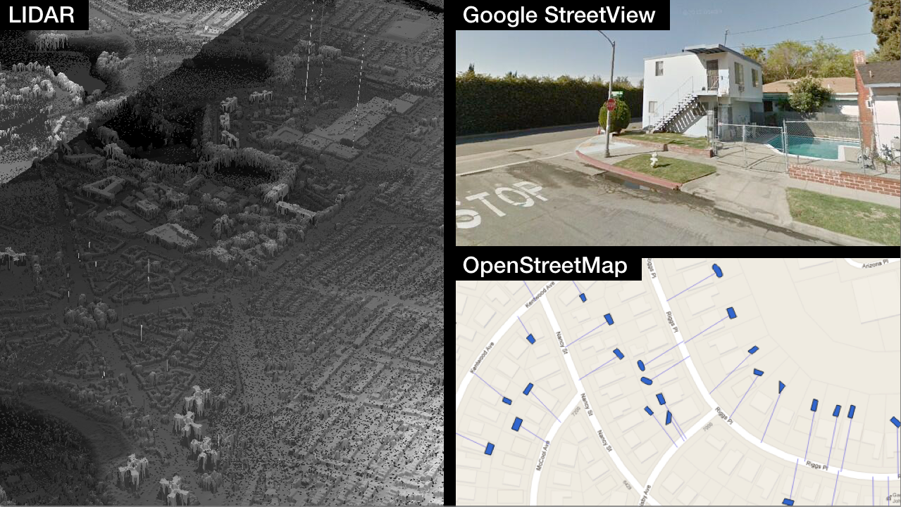
Conveniently tall google street car...
Lots of Press...
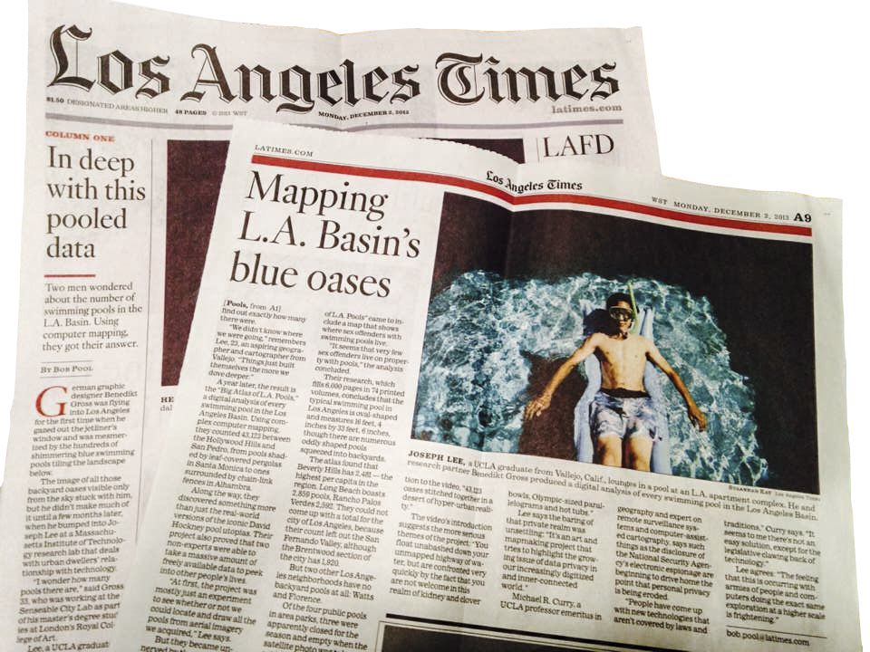
Why did we do it?
To comment on emerging issues surrounding big data, data privacy, global labor exploitation and build awareness of the darker, more sinister side of data.
Mapping to communicate science
HubCab
Analysis / Visualization of over 170 million taxi trips in NYC
"80% of trips could have been shared if passengers were willing to travel no more than three minutes out of their way..."
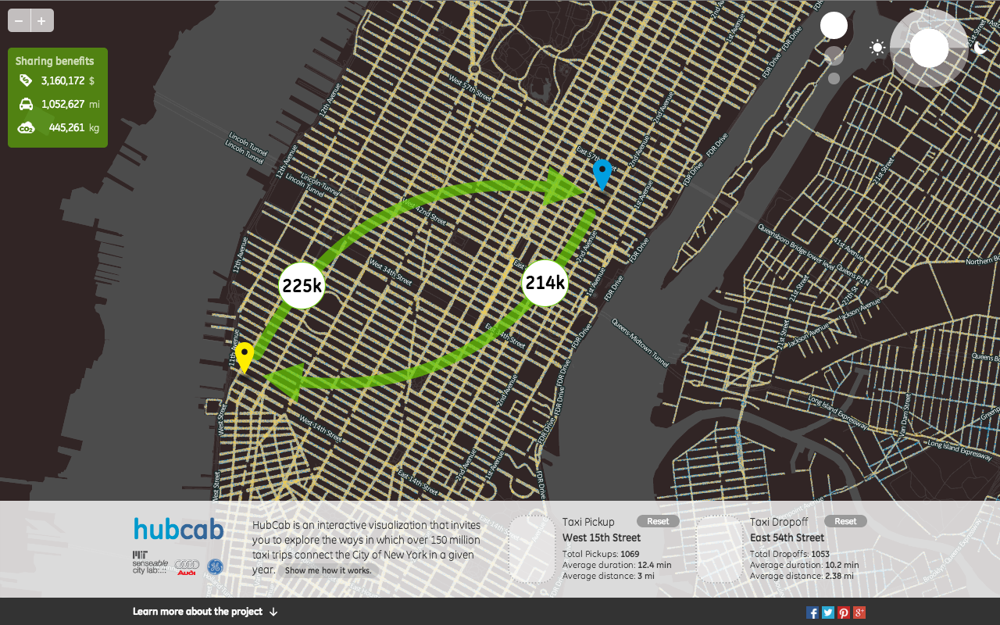
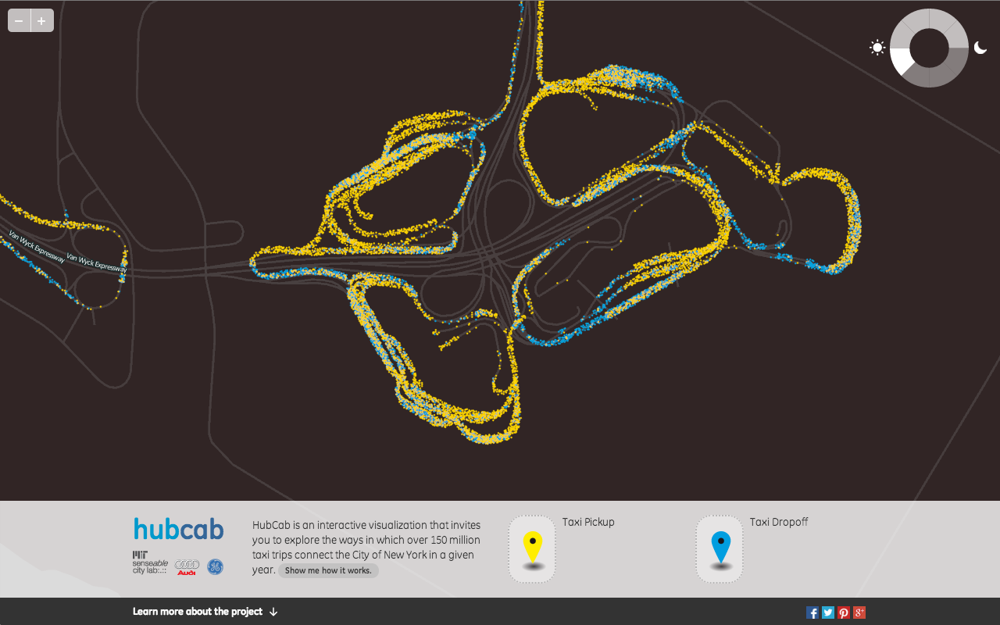
Mapping to visualize those things hiding in plain sight.
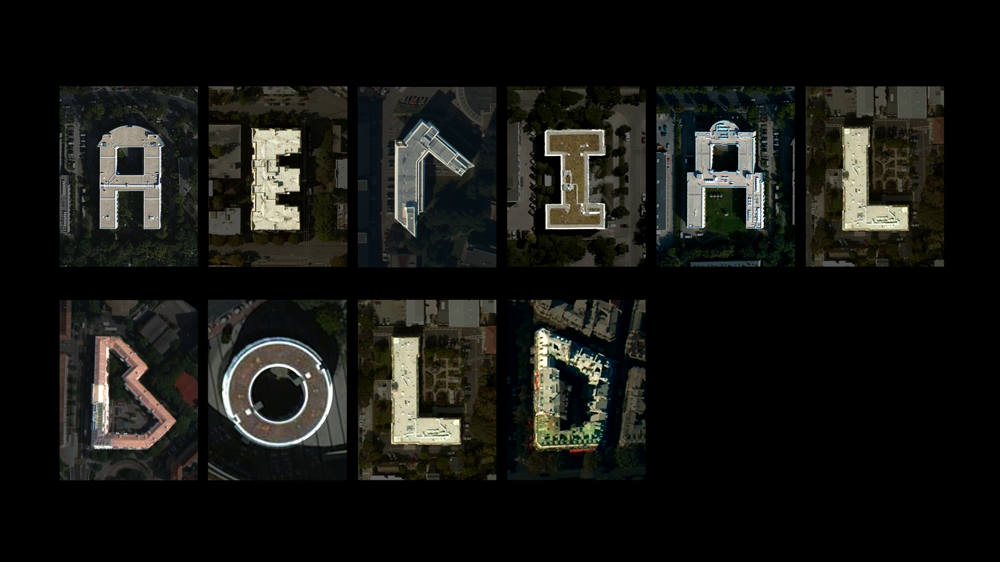
How can we inspire the (ab)use of satellite imagery to learn more about the places we live?
How can we make the process of "finding things" in imagery more democratic and understandable for nondomain experts?
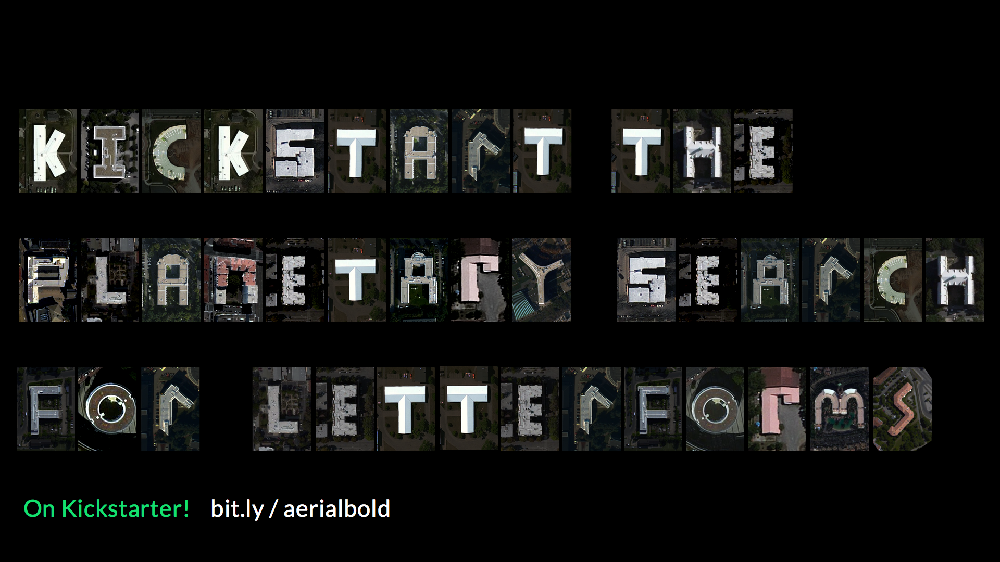
How will we do this??
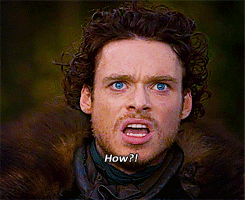
Collaborations!
We're working with:
The Institute for Artificial Intelligence (HS-Ravensburg Weingarten) - machine learning!
Mapbox - data provider!
Fluuuid - digital experience!
Kickstarter community - funding and support!
Rough outline of processing pipeline
Only time will tell!
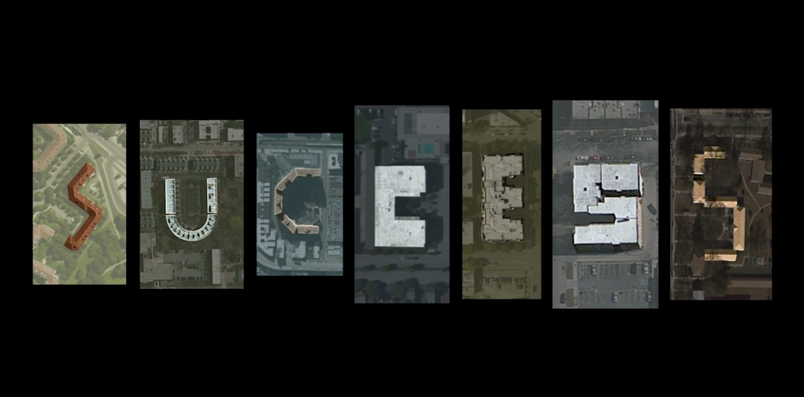
What tools do I use?
Opensource stuff!
Python, R, QGIS, OGR/GDAL, Web Stack (html, css, javascript)
Code / Programming languages are like material - each has its own benefits depending on the project!
"...do you need to learn how to code to succeed in the world of modern geospatial technology?
no ... so long as you have a basic understanding of the technologies that are enabling your cartography/analysis/data management..."